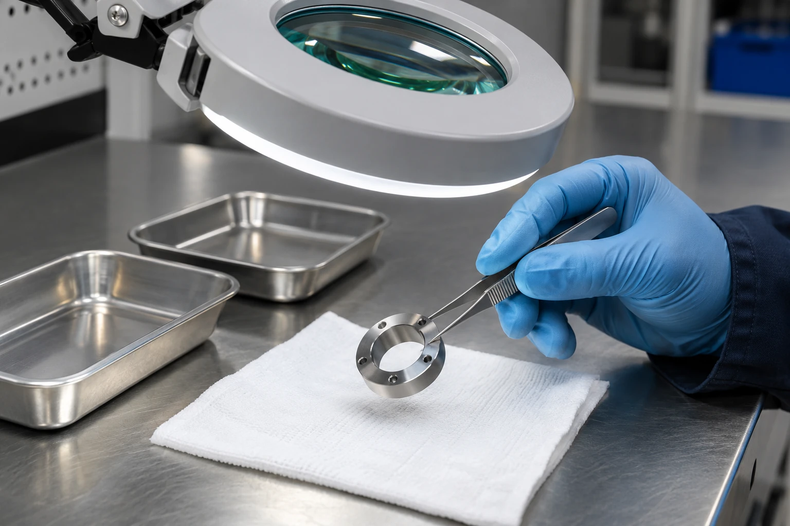

A sample evaluation is most useful when everyone agrees what it is intended to establish. A photograph of a brighter part cannot replace a record of the sample, process conditions and assessment method.
1. Turn the problem into a test question
State the uncertainty the evaluation should address. It might concern residue in a recessed feature, a proposed basket arrangement or the outgoing condition before the next operation. Keep the question narrow enough that the result can inform a decision.
Discuss the sample quantity and the inspection method before sending parts. Confirm whether the assessment will be performed by the customer, the equipment team or another agreed party. Sample arrangements, availability and responsibilities need to be agreed for the project.
2. Select samples that represent production
Identify the material, geometry, incoming residue and relevant storage history of each sample. Include the difficult features and normal variation that matter to the process. Label samples so they can be connected to their photographs and inspection records without ambiguity.
Keep a record of the as-received condition. If a comparison sample is needed, agree how it will be selected and preserved. Avoid preparing samples in a way that unintentionally changes the residue or surface before the evaluation begins.
3. Agree the conditions to record
Record the equipment reference, process sequence, basket arrangement and applicable settings used in the assessment. Identify the cleaning preparation and the information needed to understand how it was used. Record any handling or inspection step that could influence the observation.
The purpose is traceability, not a claim that one set of settings is suitable for every component. If the load or sequence differs from the intended production arrangement, make that difference explicit when reviewing the findings.
4. Build a useful evaluation record
Use comparable photography when images form part of the record. Keep lighting, orientation and inspection locations consistent. Do not present an illustrative image as a result from a customer sample.
| Record section | Contents |
|---|---|
| Objective | The question to be answered and the intended decision |
| Sample identity | Part reference, material, geometry and incoming condition |
| Process | Equipment, loading arrangement, sequence and recorded conditions |
| Assessment | Method, locations checked and observations |
| Limitations | Differences from production and questions not covered |
| Next action | Further information, revised assessment or configuration review |
5. Use the result to decide the next step
Review the observations against the original question. Separate what was demonstrated under the recorded conditions from what still needs to be assessed. A further trial, revised load or different inspection method may be needed before a production decision.
Send Sonic Shine a description and photographs of your part first. Any sample-cleaning arrangement can then be discussed with a clear objective, an agreed scope and a practical plan for handling the parts and reporting the observations.
Sources & further reading
Original practical guidance. External references explain general principles; they do not define a SonicShine model or guarantee results for your parts. Model values on this site are separately attributed to the supplied catalogue.